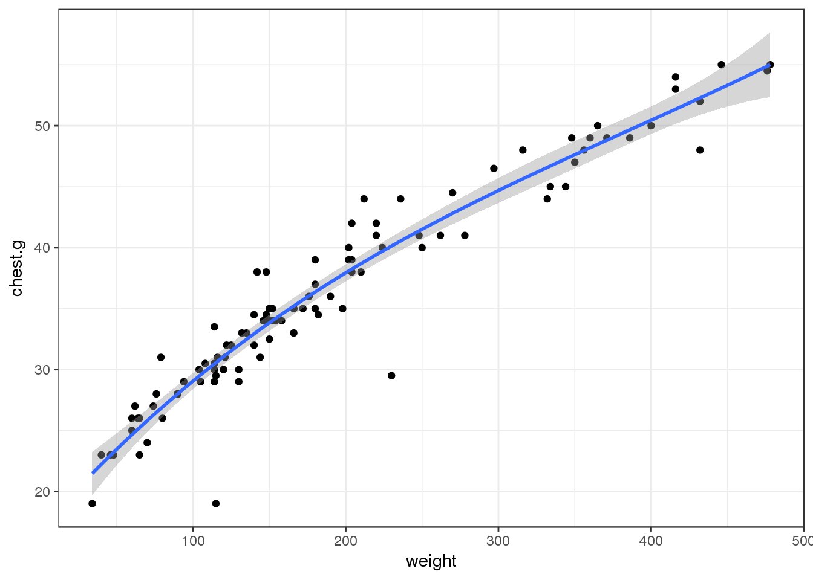

Math 3310 Class
Appalachian State University
Boone, NC 28608Ranger Bob Berra
Jellystone National Park
Wildwood Forest, CO 23456
Dear Ranger Bob Berra,
I am deeply sorry about your acid rain problem causing a lack of vegetation for the bears. After using your collected bear data to come up with a solution for you, I found that the best way to limit the number of bears going to a new location is to use the formula as follows:
Weight ~= 20(neck.g)+chest.g-0.5(length)
Weight can be approximated by taking the length plus the length times circumference of chest plus length times circumferences of neck plus length divided by circumference of chest. I also attached the graphical representation that led me to this formula conclusion. While you are looking at the graphs, you’ll notice the linearity of each and see that the bears weight and chest circumference, and the bears weight and neck circumference have the most linear relationship. I also came to the conclusion that it is not important to take into account the gender of the bear, unless of course you are worried about breeding issues which is something else to consider that could potentially continue to increase the population. If this is the case, then limiting the amount of a particular gender is recommended.
In order to use the formula, you can take the information that you collected and gave me, and simply plug in the numbers to the formula. Once you have all the weights of the bears, you can proceed to move the heaviest bears elsewhere in order to preserve vegetation for the remaining bears.
I believe that the formula that I came up with is very accurate. Looking at the graphical representations of each measurement compared to weight helped me realize what exactly is the most and least contributing factor. Upon using these contributing factors, I tested my formula with the data you provided me to ensure that it was the most accurate that it could be. I recommend using this formula in order to determine the weights of the bears you have.
Good luck with the bear move and thank you for relying on me to analyze and solve the problem for you!
Sincerely,
Samantha Widman
In the bears problem, I was assigned to compute a formula that would approximate a bears weight, given specific dimensions (length, head length, head width, chest circumference, and neck circumference). With this data, I used R Studio, programming in R to plot each dimension against the weight of bears in order to see which graph showed the most linear relationship. You can observe these graphs as follows:
Parsed with column specification:
cols(
sex = col_character(),
length = col_double(),
head.l = col_double(),
head.w = col_double(),
neck.g = col_double(),
chest.g = col_double(),
weight = col_integer()
)The weight versus the length on a bear shows a positive relationship, however, there seem to be a few outliers that show that this may not be the best relationship in order to determine the weight of a bear.
plot(bears$weight, bears$length)The weight versus the head length of a bear appears to have a scattered relationship. While the plot has some structure to it, it was not enought to convince me that head length was the best measurement to compare the weight to.
plot(bears$weight, bears$head.l)As you can see in this graph, there is little to no correlation between the weight and head width of a bear. This goes to show that using the head width to determine the weight of a bear is not recommended.
plot(bears$weight, bears$head.w)As we begin to compare the circumference of specific body parts on a bear, you can see by the graph that there is a more clear linear relationship between the two dimensions. In this graph in particular, I am plotting the weight of a bear against the neck circumference and finding out that there is a moderatly linear relationship that proves that. At this point, I was beginning to find out which dimensions were more reliable for predicting a bears weight.
plot(bears$weight, bears$neck.g)For the final graph, I plotted weight versus the chest circumference of a bear. Similar to the previous graph, there is a moderatly linear relationship between the two dimensions.
plot(bears$weight, bears$chest.g)In these final graphs, I implemented a line-of-best-fit within the graphs that showed the most linear relationship. The dimensions head length, length, and chest circumference were the best fit for comparing to weight. This mathematical approach was chosen because in order to find out the best relationship between variables, a line of best fit should be used. I chose to plot all the variables first before fitting lines, and then choosing the specific variables that appeared to have a stronger correlation. While I was assuming that the other variables did not have a strong correlation with weight, I do believe this assumption is appropriate. I also assumed that the sexes of the bears are not important. The only assumption I could make as to why the sexes of the bears could be important, is the chance of reproduction with females. Considering that Ranger Bob Berra did not specify this as an issue, I assume he strictly wanted a dimension equation, and not an equation that included a character variable (sex). Furthermore, this leads me to the final mathematical approach I took to obtain an equation to approximate the weight of bears. My final mathematical approach was the use the 3 variables (head length, length, and chest circumference) to create an equation that would approximate the bears weight. I used the data that Ranger Bob Berra gave me to guess and check different equations until I finally came across one that I think worked best. The equation that best approximates weight is:
Weight ~= 20*(neck.g)+chest.g-0.5*(length)While there is error in this equation, I found that the line of best fit between the neck.g, chest.g and length all had closely linear relationships with the weight.
[1] "sex" "length" "head.l" "head.w" "neck.g" "chest.g" "weight"
Call:
lm(formula = weight ~ ., data = bears)
Residuals:
Min 1Q Median 3Q Max
-66.995 -15.474 -4.438 13.812 126.953
Coefficients:
Estimate Std. Error t value Pr(>|t|)
(Intercept) -229.6235 26.3046 -8.729 9.95e-14 ***
sexmale 1.9170 7.4868 0.256 0.79847
length -0.1487 0.9020 -0.165 0.86937
head.l -4.5087 3.8297 -1.177 0.24208
head.w 1.0700 4.1777 0.256 0.79842
neck.g 6.5523 2.0799 3.150 0.00219 **
chest.g 9.4822 1.1962 7.927 4.82e-12 ***
---
Signif. codes: 0 '***' 0.001 '**' 0.01 '*' 0.05 '.' 0.1 ' ' 1
Residual standard error: 32.27 on 93 degrees of freedom
Multiple R-squared: 0.922, Adjusted R-squared: 0.917
F-statistic: 183.2 on 6 and 93 DF, p-value: < 2.2e-16Loading required package: carData
Attaching package: 'carData'The following objects are masked from 'package:car':
Guyer, UN, Vocablattice theme set by effectsTheme()
See ?effectsTheme for details.
Call:
lm(formula = weight ~ sqrt(length^3), data = bears)
Residuals:
Min 1Q Median 3Q Max
-95.156 -38.561 -8.843 21.821 170.651
Coefficients:
Estimate Std. Error t value Pr(>|t|)
(Intercept) -218.54991 24.65982 -8.863 3.55e-14 ***
sqrt(length^3) 0.86246 0.05051 17.073 < 2e-16 ***
---
Signif. codes: 0 '***' 0.001 '**' 0.01 '*' 0.05 '.' 0.1 ' ' 1
Residual standard error: 56.45 on 98 degrees of freedom
Multiple R-squared: 0.7484, Adjusted R-squared: 0.7458
F-statistic: 291.5 on 1 and 98 DF, p-value: < 2.2e-16 To finalize my conclusion, I will re-address my mathematical process, as well as my assumptions and recommendations for Ranger Bob Berra. To begin my project, I first took the data, variable by variable, and plotted them against the weight individually. After looking at all of the graphs, I chose the most linear variables(length, next.g, chest.g) with weight to test out the line of best fit equations(not pictured in the graphs above) within the numbers that Ranger Bob Berra had given me. I used these formulas to find the closest approximation to an individual bears weight. Throughout this process, I assumed that the sex was not important. I also assumed that Ranger Bob Berra wanted an easy equation to work with within the field, therefore I tried to keep the data manipulation as simplistic as possible. This formula does have error to it. However, the best approximation that I could come up with, that was simple and involved the measurements given, is the one stated above. For my recommendations to Ranger Bob Berra, I recommend that he takes the equation and uses it with the neck.g, chest.g, and length variables. I also recommend that he removes male bears primarily in order to limit the amount of reproduction. Also, just by glancing at the data, male bears tend to be heavier, with a few over 400 pounds.